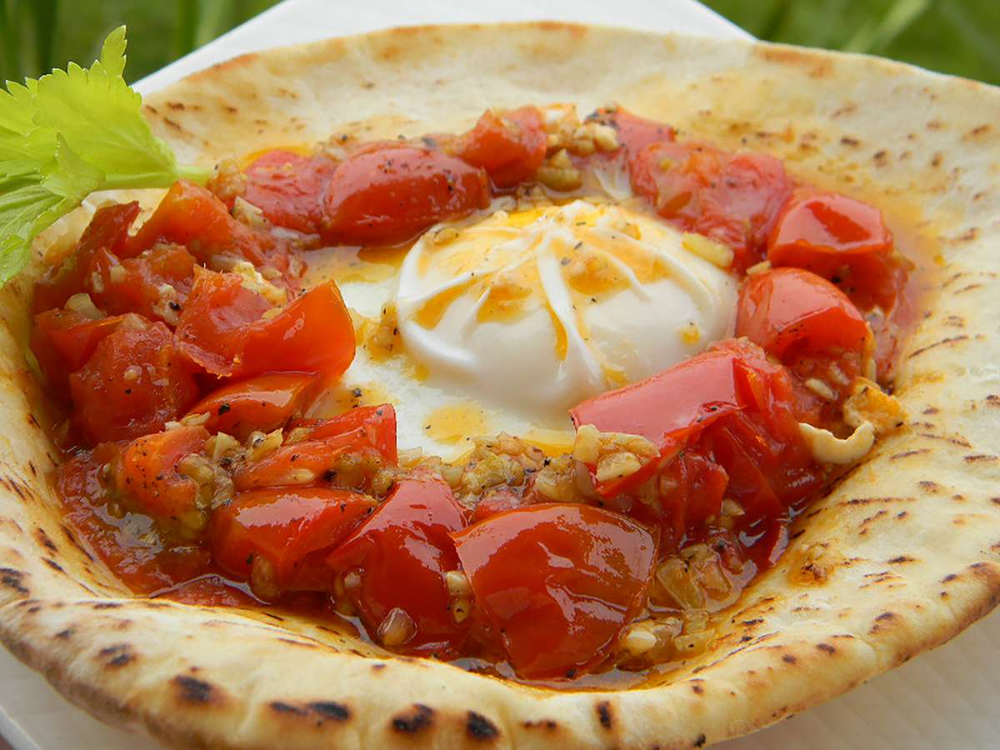

This shakshuka is an Arabic-style dish consisting of eggs, garlic, and tomatoes. My ex-husband, who is from Jordan, taught me this recipe. It's delicious!
the Ingredients needed for the recipe:
Follow these useful steps in order to make it works: